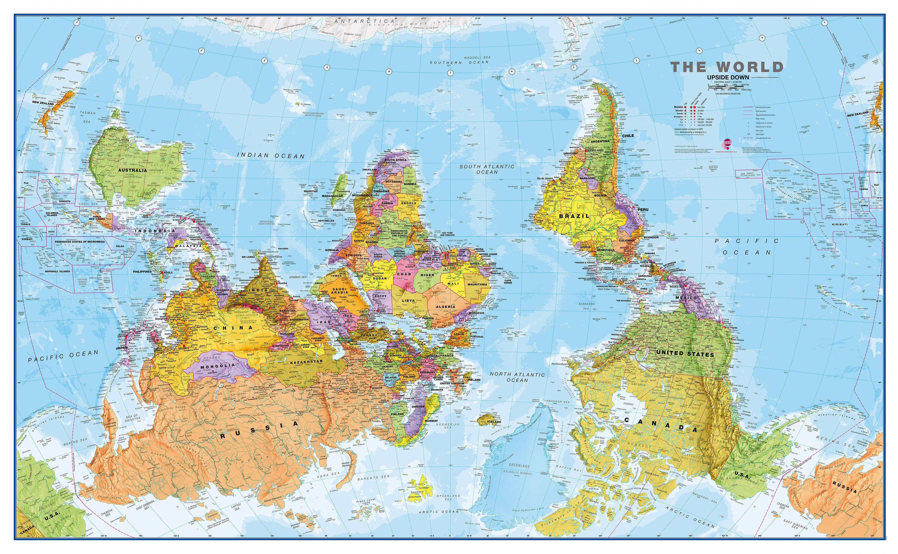

ABC Wolontariariatu zagranicznego|Skąd czerpać wiedzę o świecie

Podcast PAH
Ebook „Zanim Pomożesz: o etycznym wolontariacie zagranicznym”
Relacja z wolontariatu w sierocińcu
Relacja z wolontariatu medycznego
Opis wpływu wolontariuszy na relacje z personelem
Quizy i materiały fundacji gampinder